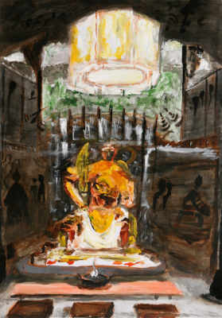
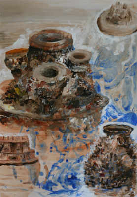
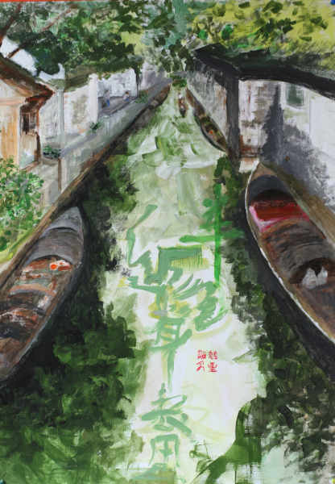
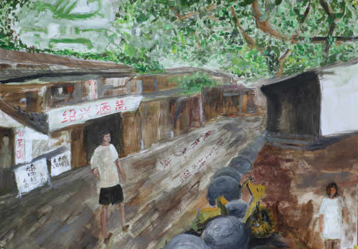
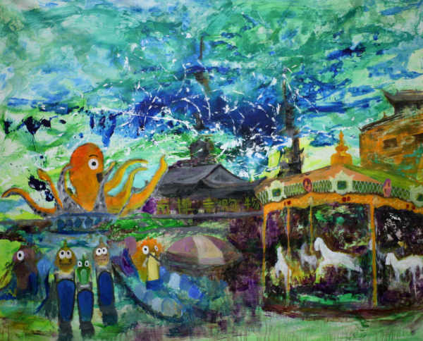
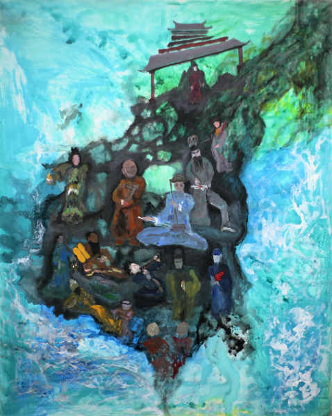

Quzhou -- Shennong temple and southern confucianism, acrylic, 50cm x 75cm on watercolour paper, 2024

Jinhua -- Funerary utensils, acrylic, 50cm x 75cm on watercolour paper, 2024

Shaoxing -- mysterious calligraphy, acrylic, 50cm x 75cm on watercolour paper, 2024

Shaoxing -- calligraphy in King's tomb, 75cm x 50cm on watercolour paper, 2024

Wuxi -- a splitting southern-Zen-temple plaza, acrylic, 200cm x 170cm on canvas, 2024

Wuxi -- Clay figures and blind Daoist musician, 170cm x 200cm on canvas, 2024